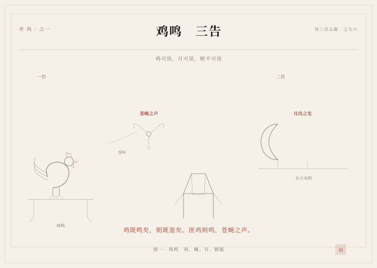
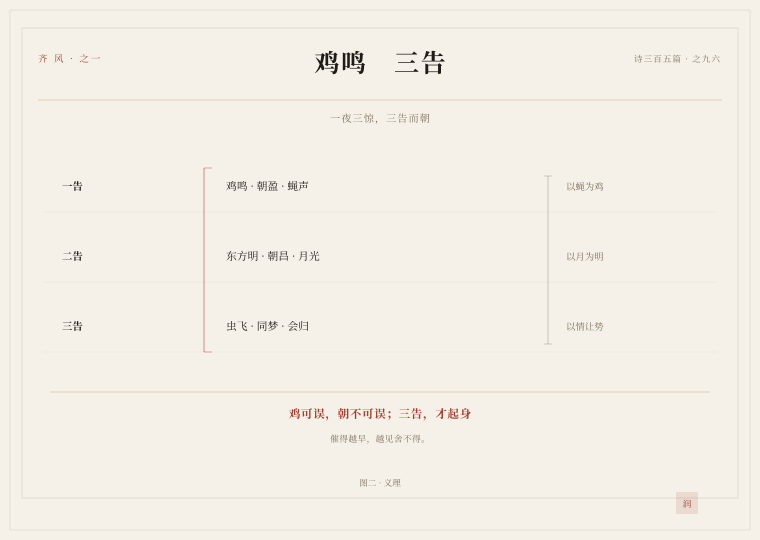

第九十六篇 鸡鸣
齐风 · 之一 SJ096
朗读 · 普通话
依经文原文朗读，章次不读出；配古琴底乐，不改速、不加拖腔。全库同一音色（豆包 TTS），非播音员录制。
一 解题
诗三判：
- 谁在说：一位在君所侍寝的贤妃。天未亮，她三次告君该起：先闻鸡，再望东方，末言虫飞。
- 说什么事：三章三层催起。鸡鸣而朝盈，东方明而朝昌，虫飞薨薨而群臣将归；她怕的不是自己晚，是君晚。
- 为何编在此：齐风之首。郑风收于《溱洧》的“再问”，此篇起于“三告”。一问是情，三告是政；齐风从“催起”开篇。
《毛序》：“《鸡鸣》，思贤妃也。哀公荒淫怠慢，故陈贤妃贞女夙夜警戒相成之道焉。”
朱子《诗集传》：“赋也。言古之贤妃御于君所，至于将旦之时，必告君曰：鸡既鸣矣，会朝之臣既已盈矣，欲令君早起而视朝也。然其实非鸡之鸣也，乃苍蝇之声也。盖贤妃当夙兴之时，心常恐晚，故闻其似者而以为真，非其心存警畏而不留于逸欲，何以能此？故诗人叙其事而美之也。”
本库的看法：《鸡鸣》是一首把“早起”写成“怕晚”的诗。
三章不是三个早晨，是一夜三惊：一闻蝇声，以为鸡鸣；一见月光，以为东方；一闻虫飞，知道天将亮。鸡可误，月可误，朝不可误。
末句“无庶予子憎”——不要因为我的缘故，让群臣憎恶你。她催的不是被窝，是朝堂。
先辨五事：“朝”是朝会、视朝，读
cháo，不是“朝代”；“盈”是满朝，不是“盈利”；“苍蝇之声”是说蝇声似远鸡，不是屋里真飞蝇；“薨薨”是虫飞声，不是“薨亡”；“无庶”是“无使、但愿不”，不是“没有庶民”。
二 经文
第一章
鸡既鸣矣，朝既盈矣。
匪鸡则鸣，苍蝇之声。
第二章
东方明矣，朝既昌矣。
匪东方则明，月出之光。
第三章
虫飞薨薨，甘与子同梦。
会且归矣，无庶予子憎。
分章：三章，章四句。
三 韵读
- 一章：鸣、盈、声，耕部；三句一韵。
- 二章：明、昌、光，阳部；三句一韵。
- 三章：薨、梦、憎，蒸部；三句一韵。
读法：由耕而阳而蒸，三部皆鼻音；声越沉，天越亮，心越急。
三章不换韵脚，只换天时。
四 字义与名物
- 鸡鸣：鸡叫，古人一夜分五更，鸡鸣为将旦之候。朝盈：来朝会的群臣已满。
- 苍蝇之声：蝇声细而远，似鸡鸣之远者；非真蝇在室，是心恐晚而误听。
- 昌：盛；比“盈”更进一层，群臣毕集。
- 月出之光：将落之月光；月光似东方既明，故又误。
- 薨薨：虫飞声；天将旦，百虫作。
- 同梦：同寝而梦；不是贪睡，是“我岂不乐与君同梦”。
- 会且归：来朝会的卿大夫将要散归；群臣若等君不出，便散朝归家。
- 无庶予子憎：不要因为我的缘故，让众人憎恶你。予，我；子，君；庶，众。
五 今译
鸡已经叫了，来朝会的人已经满了。那不是鸡在叫，是苍蝇的声音。
东方已经亮了，朝会已经盛了。那不是东方发亮，是月亮出来的光。
虫飞薨薨，我岂不乐意与你同寝同梦。可朝会的人将要散归了，不要因为我，让他们憎恶你。
六 章旨
- 一章：写“鸡”与“蝇”。以蝇声为鸡，是第一次误；误得越早，敬得越深。
- 二章：写“月”与“明”。以月光为东方，是第二次误；天未明而朝已昌，催得更急。
- 三章：写“虫”与“归”。虫飞是真，同梦是情，群臣将归是势；情让位于势，才有“无庶予子憎”。
- 总收：鸡可误，朝不可误；三告，才起身。
贤妃之贤，不在能睡，在敢叫醒。
七 诗教
- 兴：以鸡鸣起兴。先声后光，先误后真；天时是引子，朝政是落点。
- 观：观“夙夜警戒”。一个国家的早晨，先由内室叫醒；内无贤妃，外朝必晚。
- 群：夫妇相成，君臣相朝；她催君，君朝臣，臣治民，三层在一夜。
- 怨：诗里没有怨，只有惧。惧不是怕君，是怕误朝。
八 分寸与边界
- 不可把“苍蝇”当真的苍蝇扰梦。它是“似鸡之声”；一读成蝇，诗就成家务。
- 不可把“同梦”当贪睡。它是“我岂不乐”，先承认情，再让位于朝。
- 不可把“无庶予子憎”读成夫妻反目。它是“无使众臣憎君”，不是“别让人恨我”。
- 不可把贤妃当奴婢。她不是侍寝者，是“相成”的人；一读成婢，诗就成宫怨。
- 不可把三章当三个早晨。三章是一夜三告；一顺读，三告就成三天的琐事。
九 存疑
- 诗旨：毛序“思贤妃，刺哀公荒淫怠慢”；朱子同，以为“叙其事而美之”。一刺一美，本库两存，以“三告”读。
- “苍蝇”：毛传“蝇声有似远鸡之鸣”；一说实蝇。从“似鸡”，才见误听之敬。
- “朝盈/朝昌”：一谓群臣满朝，一谓朝日昌盛。从“群臣”，才与“会且归”相应。
- “同梦”：一谓夫妇同寝，一谓同梦为“同眠”。两读相近，皆不害“催起”。
- 作者与年代：毛序属哀公；朱子以为古诗。是否哀公，无确证。
十 跨典
- 《礼记·内则》：“鸡初鸣，咸盥漱，栉縰笄总。”——鸡鸣而起，是内则之常；此诗把“常”写成“恐晚”。
- 《周礼·春官·鸡人》：“凡国事为期，则告之时。”——告时之官；此诗贤妃自听，是内职补外官之失。
- 《尚书·牧誓》：“牝鸡无晨；牝鸡之晨，惟家之索。”——以“鸡鸣”戒妇人干政；此诗反用，贤妃催朝，不夺君政。
- 《诗本音》：三章耕、阳、蒸，见卷五；韵部按古韵推定。
十一 双卡与图
双卡八对：
| 朝（朝会、视朝，cháo） |
朝（朝代，cháo） |
| 盈（满朝） |
盈（盈利） |
| 苍蝇之声（似鸡声） |
苍蝇（真蝇扰梦） |
| 昌（盛） |
昌（昌盛之国） |
| 薨薨（虫飞声） |
薨（诸侯死） |
| 同梦（同寝） |
同梦（贪睡） |
| 会且归（朝会散归） |
会（聚会） |
| 无庶予子憎（无使众憎君） |
无庶（没有庶民） |

图一 · 鸡鸣 鸡、蝇、月、朝服

图二 · 鸡鸣 三告：鸡、月、虫
读图三处：
- 鸡与蝇：图一左鸡立埘，右一只小蝇，中间一条细线；蝇不画大，只画“似鸡”的距离。
- 月与东方：图一上左月，上右一线微明；月光是误，东方是真，两光不并亮。
- 朝服在门内：图一右下门内一件朝服，不画人；人未起，衣先备，才是“催起”。